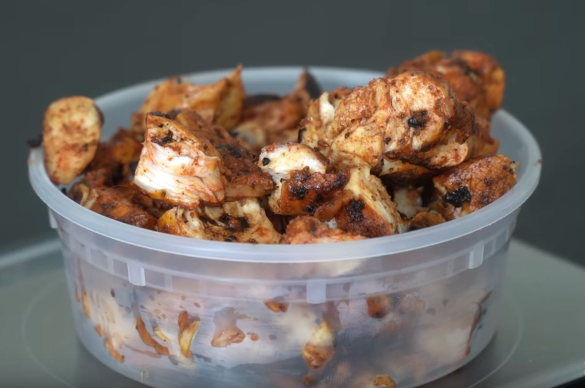

My Pollo Asado Recipe

14 chickens turned into Pollo Asado
This recipe is inspired by Mexican cuisine. Make sure to make a
big batch of this stuff because you'll eat
right through it.
Ingredients
- 2lbs Chicken breast
- 2 cloves Garlic
- 1/4 Red onion
- 1/2 Juice from a orange
- 1/2 Juice from a lime
- 1 Habanero
- 30g Achiote Paste
- Salt
- Cooking oil
Steps
- In a blender, add all ingredients (minus the chicken)
to make a marinade.
- With the marinade, save 1/4th of it and use the rest on
lathering the chicken breast.
- Marinade for at least 30 minutes and up to 4hrs.
- Add a thin layer of oil to the skillet. Once it is
ripping hot, add the chicken.
- Sear on all sides, letting it burn and char.
- For perfectly cooking the chicken, let the internal
temperature hover around 165F until cooked.
- Take the chicken off the skillet, cut into bite sized
pieces.
- Lather the rest of the marinade over the chicken bites.
Return to the top.
Return to the main page.